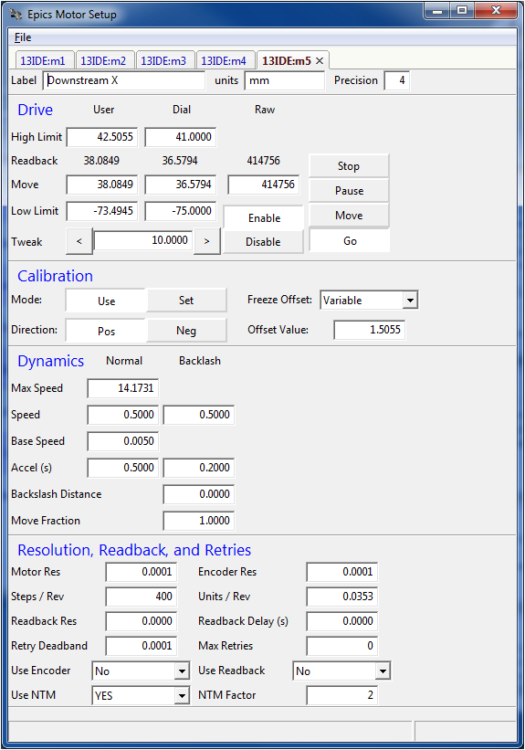

Using Epics Motor Setup¶
Epics Motor Setup is a fairly simple GUI application (using wxPython) for setting up Epics Motors. A full configuration screen is shown for each motor, using a Notebook display:
The real advantage of this Application is in two simple features:
1. being able to write a motors.template file for all the open motors.
2. being able to read and save motor settings for future use to a database. By default, a local SQLite database is used, but users at GSECARS can also use a GSE-wide database.
To save the motors.template information, simply type Ctrl-T to copy the full template paragraph to the system clipboard, then copy into the appropriate file. A simple example is:
file "$(CARS)/CARSApp/Db/motor.db"
{
pattern
{P, M, DTYP, C, S, DESC, EGU, DIR, VELO, VBAS, ACCL, BDST,
BVEL, BACC, S REV, UREV, PREC, DHLM, DLLM}
# VAL=1.999519, OFF=0.799999, NTM=1
{13IDE:, m1, "OMS VME58", 0, -1, "Upstream Y", mm, Pos, 0.200000, 0.005000, 1.00 0000, 0.000000, 0.200000, 0.200000, 400, 0.023813, 4, 50.00000 0, 0.000000}
# VAL=2.001424, OFF=-1.000026, NTM=1
{13IDE:, m2, "OMS VME58", 0, -1, "Inboard Y", mm, Pos, 0.200000, 0.005000, 1.000 000, 0.000000, 0.200000, 0.200000, 400, 0.023813, 4, 50.000000, 0.000000}
# VAL=1.999519, OFF=1.069979, NTM=1
{13IDE:, m3, "OMS VME58", 0, -1, "Outboard Y", mm, Pos, 0.200000, 0.005000, 1.000000, 0.000000, 0.200000, 0.200000, 400, 0.023813, 4, 50.000000, 0.000000}
# VAL=11.035400, OFF=1.505489, NTM=1
{13IDE:, m4, "OMS VME58", 0, -1, "Upstream X", mm, Pos, 0.500000, 0.005000, 0.500000, 0.000000, 0.500000, 0.200000, 400, -0.035278, 4, 23.494511, -52.000000}
# VAL=38.084885, OFF=1.505479, NTM=1
{13IDE:, m5, "OMS VME58", 0, -1, "Downstream X", mm, Pos, 0.500000, 0.005000, 0.500000, 0.000000, 0.500000, 0.200000, 400, 0.035278, 4, 41.000021, -75.000000}
}
A few things to note here are:
You may need to change “$(CARS)/CARSApp/Db/motor.db” to point to the correct location of the motor.db file.
Though the motor “device type” and “card” are filled out, the “slot” is not available as a PV, and so is not filled out.
The VAL (User Value), OFF (Dial Offset) and NTM field are saved for each motor as a comment.